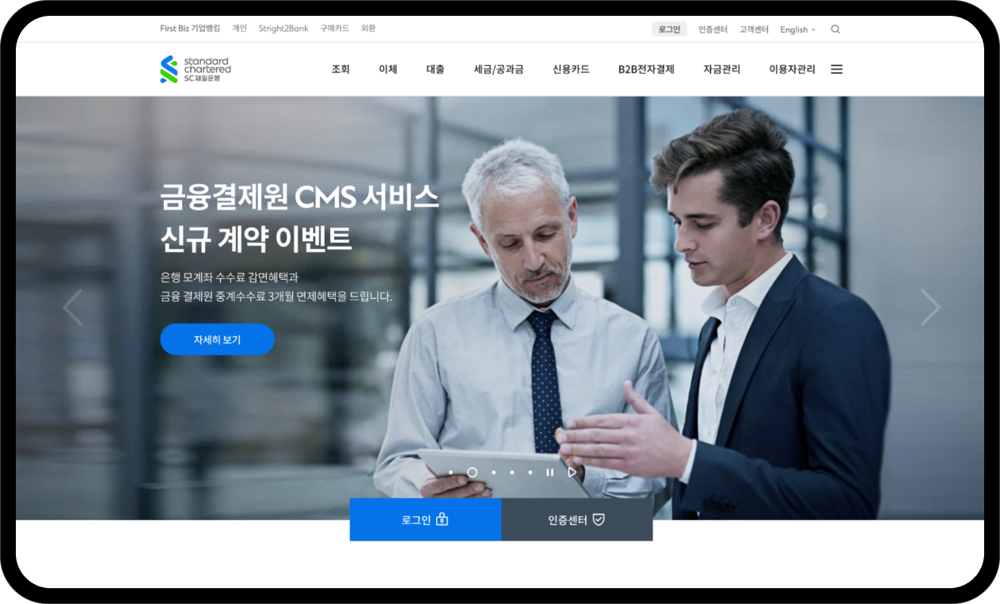
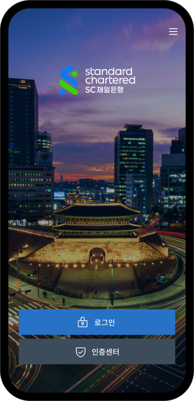

SC제일은행 비즈니스 뱅킹
단순하게, 명쾌하게, 가치있게 디앤디모바일은 스스로의 긍정적 경험을 제공합니다.

Design Concept
기존의 '퍼스트비즈(First Biz)'를 개편한 중소기업 전용 플랫폼인 '비즈니스뱅킹'은 고객 편의를 높이기 위해 사용자환경(UI)과 사용자경험(UX)을 대폭 개선하고, 핵심 서비스들을 이용자 중심으로 전면 개편했습니다.


Design Element
Global SC Group의 UXUI Guide Line을 토대로 직관적인 시인성과 가독성을 위해 새롭게 가이드라인을 정립하여 Korea SC Business Banking의 브랜딩 Idntity를 확립하는데 주력하였습니다.